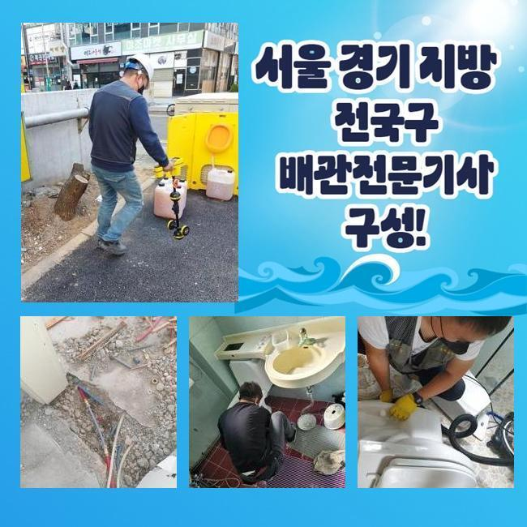
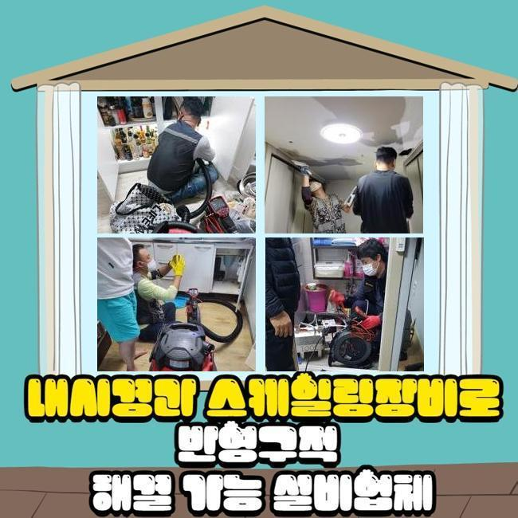
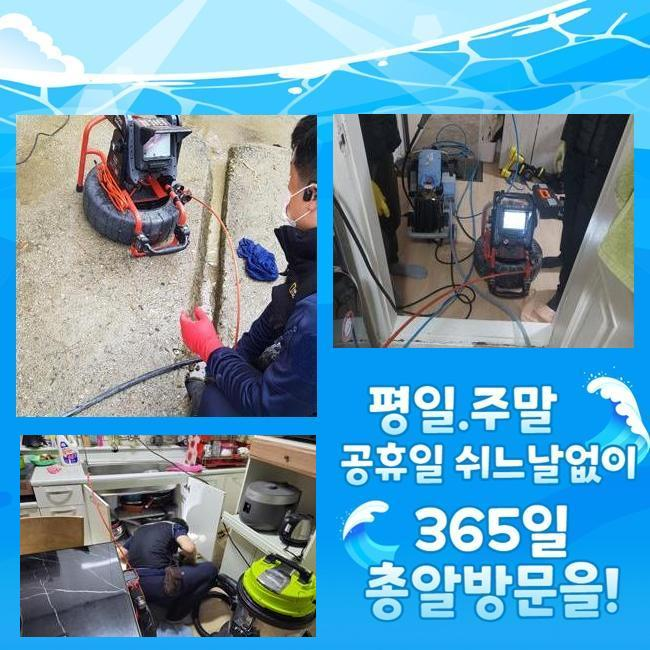
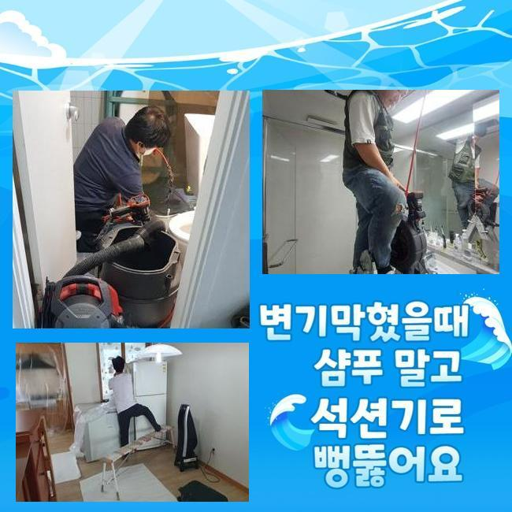
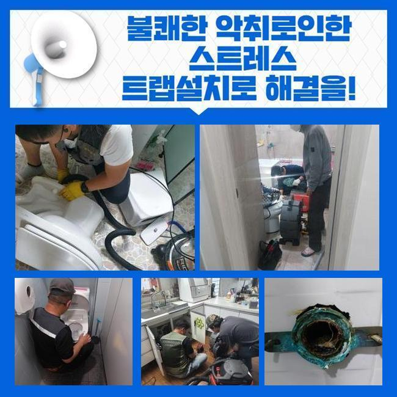
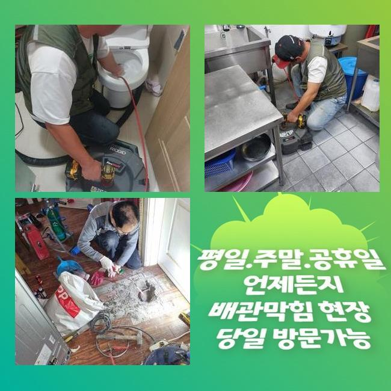
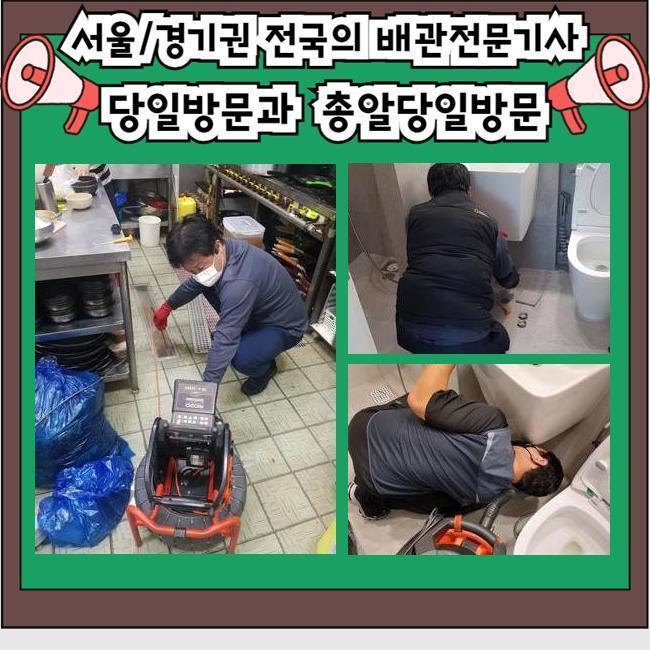

🏠 파주 오도동변기뚫음 적성면 횡주관청소 배관전문
용인시 처인구 배관막힘 전문 시공 후기

📋 작업 개요
- 위치: 용인시 처인구, 수원시 영통구, 화성시 동탄
- 서비스 유형: 배관막힘, 고압세척, 내시경점검
- 작업 일시:
- 업체명: 하수구수사대 (010-5615-2118)
🔍 문제 상황
파주 오도동변기뚫음 적성면 횡주관청소 배관전문
일반주택과 종합상가에는 언제라도지 배수관 관련 오류가 발견될수 있어요
그러하신 때에는 연쇄되는 문제들에 대비하고자 즉각적으로 전문업체에 의뢰를 하셔서 사고를 처리하는게 가장 중요합니다 이어지는 경제침체에 가능하다면 부담이 되지 않는 선에서 진행을 의뢰하시고자 하시겠지요
물론 비용적인 면도 간과할수 없지만 여러 확인사항을 놓치고 고객님께서 믿고 맡기실 수 있도록 의뢰하려고 하시면 얼마되지 않아 비슷한 문제들의 반복으로 타업체를 찾게되실 거예요
늦은 오후에 사례자님께서 배수관이 역류하는 문제들을 꽤 장시간 해결하기 위해서 노력 해보시다가 갑자기 가게의 오픈준비를 해야한다고 전달을 받았습니다
긴급하게 출동하여 문제를 파악하고 진행방법과 금액을 설명 해드리고 상호 협의하에 작업과정을 이어나갔습니다
다른업체에서 고도의 압력을 이용하는 장비로 세정작업을 받았는데 오래가지도 않고 또 그때처럼 발생했다고 말씀 해주셨습니다
전체적으로 확인해보니 일부 경사도에서 문제점이 있다고 나왔습니다
상가건물이라면 정기적으로 전문진의 도움을 받아서 진단을 진행 하는게 안전합니다

🔎 원인 분석
💡 전문가 진단: 정밀 진단 장비를 사용하여 슬러지의 고착 여부를 판명하고 타격/세척 작업을 실시했습니다.
가게에 도착하여 작업 전에 집수정이라는 설비를 살펴봅니다
현장이 넓다보니 하나가 아니고 몇군데로 나뉘어 있었지만 다 막혀있었어요
저번에 말씀 해주셨던 수리를 했을때 완전하게 해결하지 못한 상태라서 더 큰 문제점이 발전 되었습니다
의뢰인께 점검하니 전에 할 때 가게 안에 설치된 배관들만 진행하셨다고 하시길래 현재 종합적으로 이해하실 수 있도록 상의 드렸어요
특히 가게에서는 건물밖에 위치한 하수라인에 노폐물이 축적되는 일들이 많아서 맨홀이 위치한 곳까지 빠짐없이 확인해봐야 해요
높은 압을 사용하는 청소기기는 장사를 바로 하실 수 있도록 가게의 통로에서 이어지는 배수구부터 진행하기로 했습니다
내시경노즐을 넣어 막힘문제가 어느정도인지 체크한 결과 침전물로 화면을 볼 수가 없었어요
배수구의 문제가 심각하므로 플랙스샤프트 기계와 강한 압력을 사용할 수 있는 라인을 활용하여 불순물을 제거해요
첫번째로 샤프트장치를 이용했지만 입구부분만 빼내고 진행할 수 없는 매우 심한 수준으로 작업을 중지 하였습니다
그다음엔 고압력의 케이블을 사용해서 80도가 넘지않는 온도에서 고온세정을 작업을 시작했습니다

🔧 작업 과정
장시간 시공하며 고된 작업인만큼 고온세척 작업의 가격적인 면을 고민하시는데 불합리한 부분 없이 진행을 하므로 안심하시기 바랍니다
고압을 이용한 세정과정으로 지속적으로 진행을 해보니 슬러지와 물티슈 등이 계속 나왔어요 음식업종에서 흔하게 나오게 되는 종류예요
보통 기름같은 것들은 이해하겠지만 물티슈는 어째서 있는건지 의문스럽다 하시는데 가게를 이용한 손님들께서 변기를 사용후물티슈나 이물질등을 분리하지않고 버리기 때문이죠
물티슈같은 종류는 그냥 나오지 못할뿐더러 물에 불면서 불어나서 하수관 안을 막고있게 되겠죠
수조에서 정화를 해주는 하수로 나오는 오염수이지만 완전하게 확인하셔서 쓰레기는 따로 버리시길 바랍니다
분리배출을 하지 않는다면 오늘처럼 막힘사고가 일어나고 얼마 지나지 않아 전문가에게 상담 받아보시고 뚫는 작업을 해야합니다
전문가를 불러서 진행하는 검사들도 필요한 방법이지만 사용자의 사소한 이용방법도 문제를 예방할 수 있어요
음식의 기름이나 이물질들을 배관으로 흘려버리는 것을 조심하고 정기적으로 80도를 넘지 않는 온수를 이용해 청소하는게 문제예방에 도움이 됩니다
어느정도 지나고 내시경노즐을 투입해 확인해봤더니 조금씩 통수가 시작되며 장기간 고객분을 힘들게 했던 하수관 문제를 수리하였어요
수리가 완료된 후에 안을 보는 기기를 이용해 점검해보니 말끔합니다 의뢰인분께서도 함께 모니터 보시면서 깨끗한 내부를 확인하셨어요
오염물질을 빼냈으니 기름이 떠있는 물이 끝난후 완전한 통수까지 확인을 계속합니다
한참동안 물이 내려가게 해서 남아있던 찌꺼기들이 전부 빠져나간 이후 맑은 하수가 나온것까지 보고나서 종료하였습니다
이런 작업이 끝나면 기본적으로 물을 내려보고 정상 배출을 확인합니다
보통 침전물이 제거되면 다된거라고 생각하실 수도 있지만 완벽하게 모두 제거해야 막힘사고가 발생하지 않아요
잦은 막힘으로 하수관에 부담을 주게되어 얼마 지나지 않아 물이 새는 현상이 일어나며 비용이 많이 드는 공사까지 필요할 수 있어서 방치하지 마시고 신속히 조치하세요
기기를 이용해 남은 이물질이 있는지 확인을 끝내고 확인단계까지 완료하였습니다


✅ 작업 완료
하루에도 수없이 다양한 사람들이 사용하는 곳인만큼 막히는 일들이 잦지만서도 사용상 주의를 한다면 지금의 현장을 보셨던 것처럼 대공사가 필요할 정도로 막힘피해가 발생하는 상황은 흔하지 않습니다
우리업체는 고객님께서 믿고 맡기실 수 있도록 운영을 하오니 필요하실때 문의주시면 정성껏 응대하겠습니다
막힌 배관은 쉽게 생각해서 기름덩어리를 제거하고서 끝이 나는 것이 아니기때문에 보다 정확한 원인을 찾아 다음으로 어떤 작업을 해야할지 정해서 전문가에게 도움을 청하는게 안전합니다
도움이 필요할때 전화주시기 바랍니다 꼼꼼하게 상담해드리고 신속 정확하게 처리 해드리겠습니다




⚠️ 하수구 배관 막힘 예방 및 관리 가이드
- ✅ 머리카락, 비닐, 물티슈 등 물에 분해되지 않는 이물질은 절대 흘려보내지 마세요.
- ✅ 기름기 많은 식기는 설거지 전 키친타올로 먼저 기름때를 닦아내세요.
- ✅ 주기적으로 배수구에 뜨거운 물을 가득 부어주어 유지방 고착을 방지하세요.
- ✅ 작업 후 1년 이내 재발 시 무상 A/S 보증 서비스를 제공합니다.
💡 핵심 정리
- 확실한 장비 작업(내시경 점검 및 샤프트 스케일링)으로 원인을 뿌리 뽑습니다.
- 작업 후 1년 이내에 동일한 부위 재발 시 100% 무상 A/S 서비스를 보장합니다.
- 서울 · 경기 · 인천 전 지역에 24시간 언제든 긴급 출동할 수 있도록 항시 대기 중입니다.
❓ 자주 묻는 질문 (FAQ)
🚨 용인시 처인구 배관막힘 문제로 고민이신가요?
정확한 원인 진단과 확실한 시공으로 재발 없는 해결을 약속드립니다.
24시간 긴급 출동 | 서울 · 경기 · 인천 전지역 | 1년 내 재발 시 무상 A/S